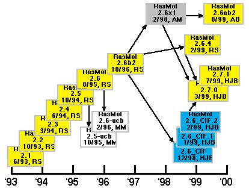

© Copyright Herbert J. Bernstein 2000
Introduction
This document is an attempt to explain the historical context within which the current thread of RasMol development is being done. This is a very narrow view of a very rich subject area. For a broader view of the history of molecular graphics, see the references to this note and various web pages on the subject.
Historical Context
Pictures help in understanding the structure and function of biologically significant molecules. When individual atoms and bonds are being considered, representations of bonds as sticks and atoms as balls or as ellipsoids showing thermal librations are commonly used. When structure on a larger scale is being considered, renderings based on stick bonds without explicit representations of atoms, spaced-filling balls for atoms without explicit representations of bonds, ribbons and curved tubes to represent polymeric backbones and isoparametric surfaces coloured by the state of other parameters are commonly used. On either scale, electron density maps are useful. The small scale renderings were standardized in 1965 when Carroll Johnson1 created the Oak Ridge Thermal Ellipsoid Program, ORTEP, a computer program that renders atoms as balls or ellipsoids connected by stick bonds. Cyrus Levinthal and Robert Langridge2 used computer graphics for larger scale renderings in structural biology. In 1969, Irving Geis3 set the standard for hand-drawn, graphical renderings of the features of biological macromolecules. In the 1960's and 1970's computer generated graphics gradually caught up with the standard set by Geis. See the F. Scott Mathews 1983 review4. High quality graphical representations of molecules became an essential element of scientific research in structural biology. In 1991, Kraulis5 released Molscript, which, in combination with Raster3D6, has become the standard for high-quality renderings of macromolecules as static images. In 1992, the Richardsons released a Macintosh-based visualization program for kinemages7 of macromolecules. In 1992, Roger Sayle8 described the program RasMol, which used a highly efficient rendering algorithm to allow high quality interactive rendering of macromolecules on a wide variety of platforms. The program was released in 1993. Roger Sayle's maintenance and development of RasMol was supported by Glaxo for several years.
There are many other graphic rendering programs in use in structural biology. Swiss-PdbViewer9 displays and manipulates multiple models and electron density maps. Raster3D6,10,11 provides a powerful set of rendering tools for quality images of ribbons, space-filling atoms, etc. Molscript1213 is a rendering program both for visualisation and export to other rendering programs, such as Raster3D. Molecular Simulations Inc. (MSI) distributes WebLab ViewerLite for free and sells WebLab ViewerPro for visualisation of molecules on Macs and PCs (see http://www.msi.com/life/products/weblab/viewer). MDL Information Systems, Inc (MDL) distributes Chemscape Chime, a derivative of RasMol that works as a web browser "plug-in". In the late 1980's UCSF Computer Graphics Laboratory's MIDAS 13 provided graphics tools for drug design by visualisation and docking of molecules. In the early 1990's Anthony Nicholls' GRASP14 brought a new level of rigor and quality to visualisation of surfaces.
Many of the programs mentioned in an historical context above have continued to develop. Ortep is alive and well with a new user-friendly semi-interactive interface (see http://www.ornl.gov/ortep). The current descendant of MIDAS is Chimera (see http://www.cgl.ucsf.edu/chimera), which emphasizes extensibility. GRASP has been made highly accessible by a web server (GRASS, see http://trantor.bioc.columbia.edu/GRASS/surfserv_enter.cgi). For pointers to additional rendering programs, see the RCSB web page (http://www.rcsb.org), and the IUCr web page (http://www.iucr.org).
RasMol Developmental Threads
The RasMol 2 series began with the release of RasMol 2.1 in 1993 by Roger Sayle. In 1995 and 1995, Marco Molinaro modified Roger Sayle's RasMol versions 2.5 and 2.6 to create 2.5-ucb and 2.6-ucb. In late 1996, Roger Sayle release 2.6b2 which proved to be very popular and durable. Arne Mueller worked with Roger Sayle in 1998 and created a modified version of 2.6b2 called 2.6x1, which was recently used as a base for a version called 2.6ab2 by Andreas Bohne. In late 1998, Herbert Bernstein (the author of this review) modified 2.6b2 to create the 2.6 CIF series. At the same time Roger Sayle was completing his own update to 2.6b2 called 2.6.4. In early 1999, Roger Sayle, Arne Mueller and Herbert Bernstein agreed to work together on a new, common, open source version of RasMol, the 2.7 series, which is managed and released by Herbert Bernstein. As of this writing, versions 2.6.4, 2.6_CIF and 2.6x1 have all been integrated into the 2.7 series, and agreement has been reached with Marco Molinaro and Andreas Bohne on integration of their modifications into the main line of development. A preliminary release incorporating some of the 2.5-ucb and 2.6-ucb mods was released in August 2000.

Figure 1. Relationships among some of the variants of RasMol. The initials used are: "RS" for Roger Sayle, "AM" for Arne Mueller, "MM" for Marco Molinaro, "AB" for Andreas Bohne, and "HJB" for Herbert J. Bernstein.
The new 2.7 series differs from the earlier version by being a copyright-protected open source version. Roger Sayle's earlier versions were made freely available without restriction. The new series does have some restrictions. The following conditions are imposed on copying and distribution:
2. Please give credit where credit is due by citing the version and original authors properly; and
3. Please do not give anyone the impression that the original authors are providing a warranty of any kind.
If you would like to use major pieces of RasMol in some other program, make modifications to RasMol, or in some other way make what a lawyer would call a "derived work", you are not only permitted to do so, you are encouraged to do so. In addition to the things we discussed above, please do the following:
5. Please make your modified source code available.
These conditions should help ensure the continued open source development of RasMol for the indefinite future. There may have been some concern in the past that such "open-source" licensing might discourage commercial use of the new versions of RasMol, but the recent commercial successes of other open-source based efforts would seem to indicate that such concerns are not to be taken as seriously as they might once have been, and uses of RasMol in research and instruction can only benefit from ensuring access to source code of the full series.
Roger Sayle's RasMol 2.6b2 is, arguably, the most popular variant of RasMol. It has been ported to almost all platforms used in structural studies. It allows the display and manipulation of a single molecule as one rigid body.
RasMol 2.5-ucb is a version of RasMol derived in 1995 from RasMol 2.5 by Marco Molinaro of the MultiChem Facility at the University of California, Berkeley (see http://mc2.cchem.berkeley.edu/RasMol). It was then upgraded to RasMol 2.6-ucb, based on RasMol 2.6. The MultiChem modified version of RasMol can display up to 5 molecules, and can rotate portions of a molecule around a selected bond. This is also a very popular variant of RasMol. However, until January 2000, this version was been released only in binary form for Macs, PC's, Linux, Ultrix and HP-UX. As noted above, agreement has been reached to allow the merging of these modifications into a future release of the common open-source version, which should allow for wider user of these features.
Arne Mueller's RasMol 2.6x1 added the ability to calculate individual torsion angles and Ramachandran plot data, to show selected chains, groups and atoms, to select by CIS bond angles, and added POV-Ray 3 output capabilities. In merging 2.6x1 into the 2.7 series, the Ramachandran plot capabilities were extended to full printer plot logic using Frances Bernstein's fisipl (see ftp://bnlarchive.rcsb.org/pub/pdb_software/program_tape/fisipl.for).
Herbert Bernstein's RasMol 2.6_CIF added the abilty to read either mmCIF or CIF data sets, and to colour by alternate confomer or model. The work on colouring by alternate conformer or model was done in collaboration with Frances C. Bernstein.
Roger Sayle's RasMol 2.6.4 was a major cleanup and reorganization of the source code of RasMol for maintainability.
Andreas Bohne's RasMol 2.6ab series adds automatic detection of pixel
depth, extended menus, and better scripting capabilities.
References
1 Johnson, C.K. (1965) ORTEP, Oak Ridge National Laboratory
2 Levinthal, C. (1966) Molecular Model-Building by Computer. Sci. American 214, No. 6, 42-52
3 Dickerson, R.E. and Geis, I (1969) The Structure and Action of Proteins, W. A. Benjamin, Inc.
4 Mathews, F.S. (1983) Interactive Graphics in the Study of Molecules of Biological Interest, in Crystallography in North America (McLachlan, D., Jr. and Glusker, J.P., eds.), pp. 235-240, American Crystallographic Association
5 Kraulis, P. J. (1991) Molscript: A Program to Produce both Detailed and Schematic Plots of Protein Structures. J. Appl. Cryst. 24, 946-950
6 Bacon, D.J. and Anderson, W.F. (1988) A Fast Algorithm for Rendering Space-Filling Molecule Pictures. J. Mol. Graphics 6, 219-220.
7 Richardson, D.C. and Richardson, J.S. (1992) The Kinemage: A Tool for Scientific Communication. Protein Sci. 1, 3-9
8 Sayle, R. and Bissell, A. (1992). RasMol: A Program for Fast Realistic Rendering of Molecular Structures with Shadows, in Proceedings of the 10th Eurographics UK '92 Conference, University of Edinburgh, Scotland
9 Guex, N. and Peitsch, M.C. (1997) SWISS-MODEL and the Swiss-PdbViewer: An environment for comparative protein modeling. Electrophoresis 18, 2714-2723.
10 Merritt, E.A. and Bacon, D.J. (1997) Raster3D: Photorealistic Molecular Graphics. Meth. Enzymology 277, 505-524.
11 Ferrin, T.E., Huang,C.C., Jarvis,L.E. and Langridge, R. (1988) The MIDAS Display System. J. Mol. Graphics, 6, 13-27,36-37
12 Nicholls, A. and Honig, B. (1991) A rapid finite difference algorithm, utilizing successive over-relaxation to solve the Poisson-Boltzmann equation. J. Comput. Chem. 12, 435-445